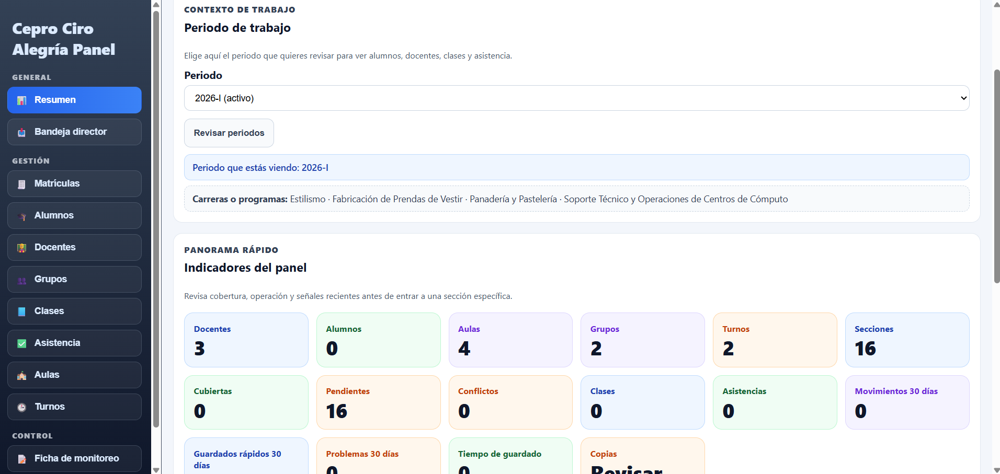
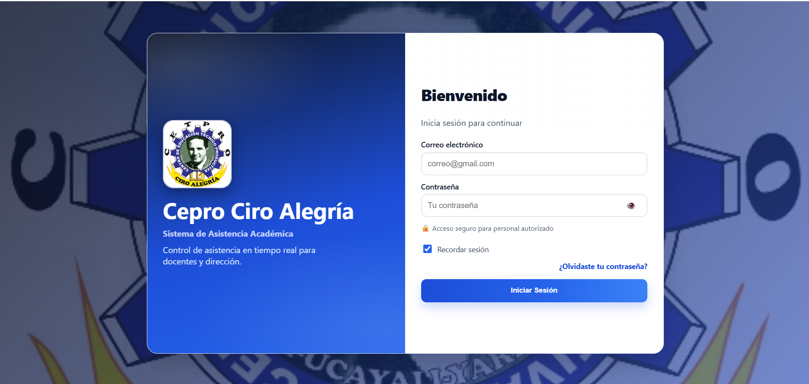
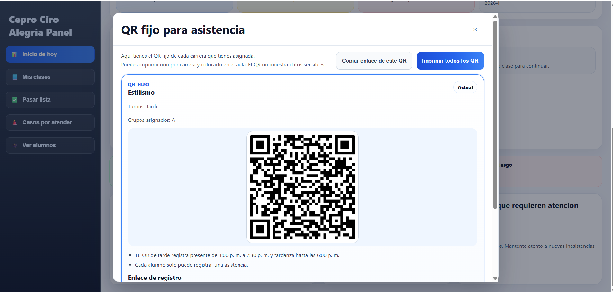
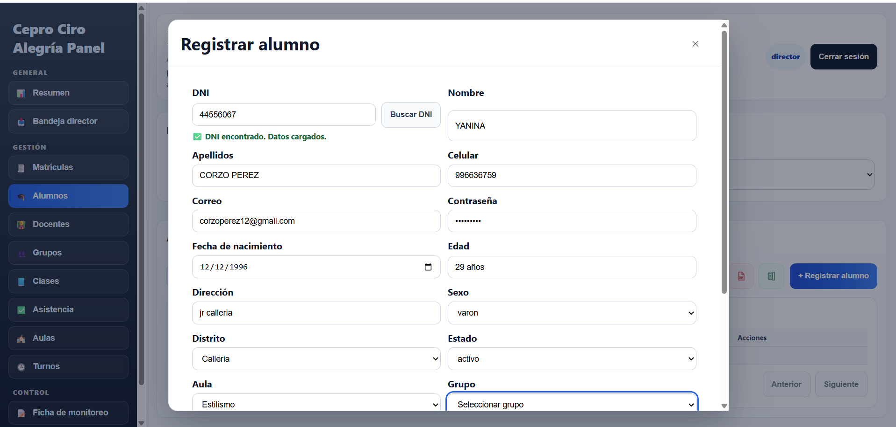
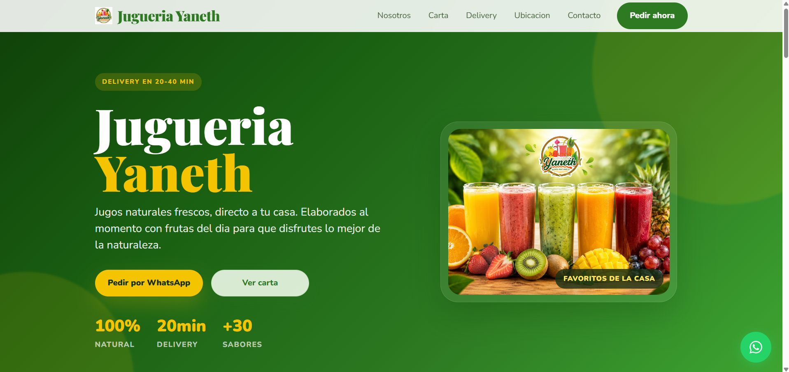
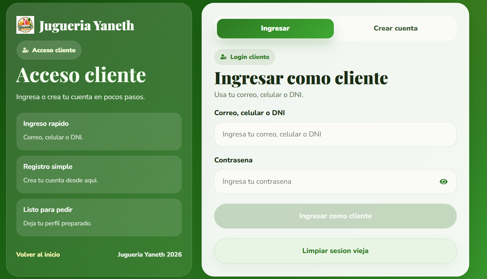
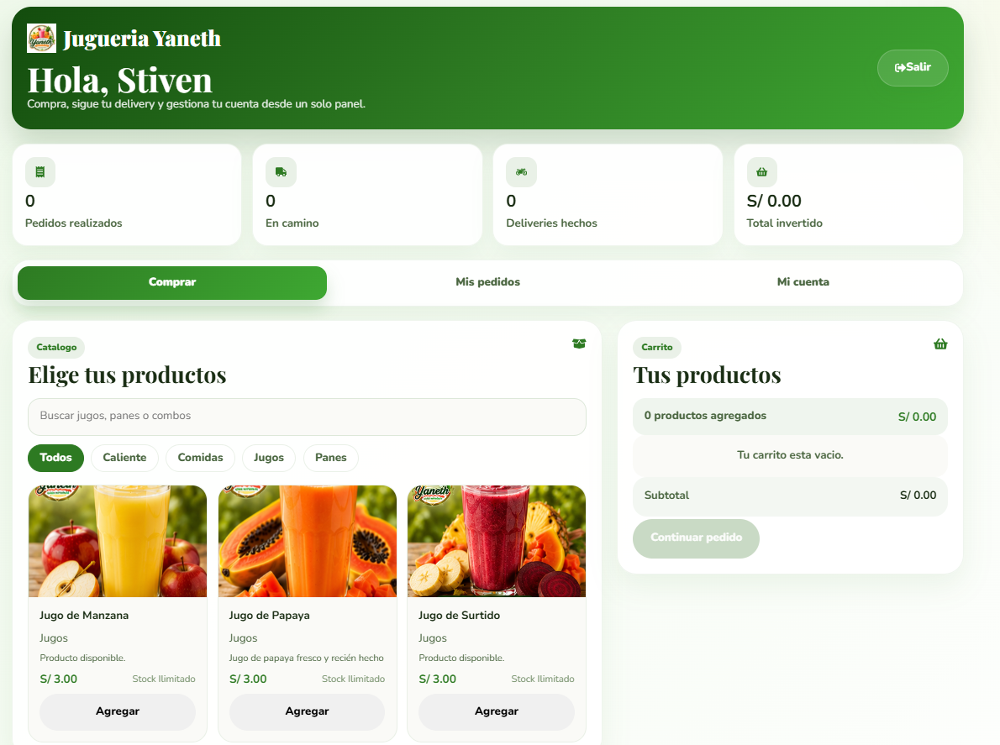
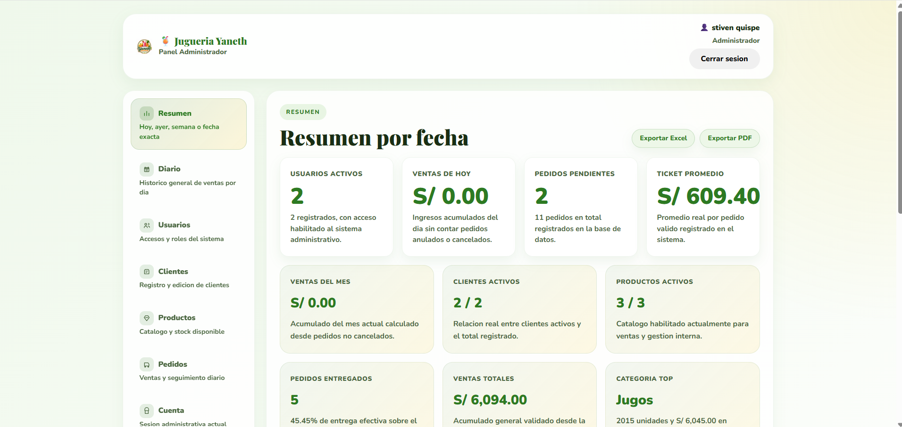
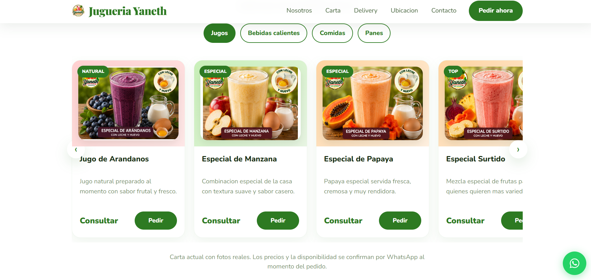

Full Stack Developer orientado a producto, operaciones reales y experiencia profesional
Construyo sistemas web que se ven serios, funcionan de verdad y resuelven operacion real
Soy Stiven Quispe. Desarrollo plataformas web con foco en claridad visual, backend solido y estructura lista para produccion. Uno de mis trabajos mas importantes es CEPRo, y tambien Jugueria Yaneth, una plataforma de ventas y gestion donde combine panel administrativo, autenticacion por roles, flujo cliente y una experiencia pensada para operacion real.
- Interfaces limpias con jerarquia visual y enfoque profesional
- Backend, autenticacion, base de datos y dashboards conectados
- Experiencia real construyendo CEPRo y Jugueria Yaneth para operacion diaria
Autenticacion y control de acceso
Dashboards y modulos administrativos
Arquitectura clara y mantenible
Experiencia enfocada en producto real
Proyecto que mejor me representa
CEPRo
Sistema web para gestion academica y operativa con flujos de asistencia, paneles por rol, autenticacion segura y herramientas pensadas para administracion diaria.
- Dashboard administrativo y seguimiento operativo
- Registro de asistencia con QR y control por aula
- Roles, seguridad, metricas y estructura escalable
Especialidad
Full Stack Developer
Sistemas administrativos, productos web profesionales y experiencia de usuario clara
Proyecto fuerte
CEPRo | Admin, QR, Auth y Dashboard
Un caso real donde conecte interfaz, backend, datos y operacion institucional
Sobre mí
Desarrollo digital con criterio visual, enfoque tecnico y mentalidad de producto
No me enfoco solo en escribir codigo. Me enfoco en construir productos web que transmitan confianza, orden y profesionalismo. Trabajo en soluciones que necesitan verse bien, funcionar con claridad y aportar valor real al negocio o al usuario final.
Mi perfil combina desarrollo frontend y backend para crear experiencias completas: desde interfaces modernas y bien estructuradas hasta logica de negocio, autenticacion, conexion con bases de datos y paneles administrativos listos para crecer. En CEPRo aplique este enfoque en un contexto institucional, priorizando claridad, velocidad de operacion y orden.
Busco oportunidades donde pueda aportar con criterio tecnico, buena ejecucion visual y capacidad para convertir ideas en productos funcionales. Estoy preparado para colaborar como freelance o integrarme a equipos que valoren calidad, claridad y resultados.
Interfaces con jerarquia visual
Diseno pantallas limpias, modernas y faciles de recorrer para que el usuario entienda rapido lo importante.
Sistemas pensados para operacion real
Construyo dashboards, formularios, autenticacion y modulos administrativos orientados a uso real.
Desarrollo listo para crecer
Trabajo con una base tecnica clara para que el proyecto pueda escalar, mantener orden y evolucionar.
Stack
Stack orientado a desarrollo de productos web reales
Utilizo tecnologias enfocadas en construir experiencias modernas, rendimiento solido y soluciones listas para produccion.
Frontend
HTML, CSS, JavaScript y React
Desarrollo interfaces modernas, responsivas y bien estructuradas, con foco en claridad visual, interaccion fluida y experiencia de usuario.
Backend
Node.js y PHP
Construyo logica de negocio, autenticacion, manejo de datos y estructuras que permiten crear sistemas funcionales y escalables.
Base de datos
MySQL
Diseno y gestiono estructuras de datos para plataformas administrativas, paneles de control, formularios y flujos con persistencia confiable.
Herramientas
GitHub, APIs y control de versiones
Trabajo con herramientas que mantienen el proyecto ordenado, colaborativo y preparado para seguir creciendo en escenarios reales.
Perfil profesional
Lo que busco y lo que puedo aportar como desarrollador
Seguir creciendo como desarrollador web full stack participando en proyectos donde pueda aportar frontend, backend, base de datos y una presentacion profesional del producto.
Oportunidades de practicas, colaboracion o trabajo donde pueda aprender mas, asumir retos reales y seguir fortaleciendo mi experiencia tecnica.
Capacidad para convertir una necesidad del negocio en una solucion web clara, funcional y visualmente ordenada.
Me enfoco en entender el problema, organizar bien la solucion y desarrollar algo que se vea serio, funcione bien y sea util para el usuario final.
Proyecto destacado
CEPRo: sistema academico y operativo construido para uso institucional real
Caso de estudio principal
Una plataforma pensada para ordenar procesos, reducir friccion y elevar la gestion diaria
CEPRo nacio para centralizar tareas academicas y operativas en una sola plataforma. Trabaje una experiencia con roles diferenciados, autenticacion, gestion de alumnos, modulos administrativos, asistencia con QR y paneles que muestran informacion util sin sobrecargar la interfaz.
Node.js
MySQL
Express
HTML
CSS
Auth
QR
Dashboard
Login
QR
Registro




Un solo sistema para administracion, autenticacion, asistencia y registro academico.
El reto era ordenar informacion, accesos y operaciones diarias dentro de una interfaz clara y una base tecnica confiable.
Desarrolle backend, autenticacion, estructura de datos y pantallas orientadas a que cada rol encuentre rapido lo que necesita.
CEPRo resume bien mi forma de trabajar: productos que se ven serios, soportan uso real y ayudan a que una institucion funcione mejor.
Casos de estudio
Proyectos pensados para resolver, ordenar y generar confianza
Proyecto 1
CASO PRINCIPAL CEPRo
CEPRo
Sistema academico y operativo pensado para instituciones educativas. Este proyecto muestra mi capacidad para construir plataformas internas con autenticacion, modulos por rol, control academico y flujos de uso diario real.
Para que sirve
Sistema interno para ordenar la operacion academica y administrativa.
- Paneles por rol y control academico
- Autenticacion segura y gestion de accesos
- Asistencia QR y seguimiento operativo
Caso de estudio institucional + operativo
Una plataforma interna pensada para ordenar accesos, centralizar procesos academicos y facilitar la operacion diaria con claridad.
CEPRo muestra mi capacidad para construir sistemas completos de uso real: autenticacion, dashboards, modulos administrativos, asistencia QR y control academico conectados sobre una base tecnica clara. No es solo interfaz: es operacion institucional resuelta con criterio de producto.
Node.js
Express
MySQL
Auth
Dashboards
QR
Admin UI
Operacion Real
Vista principal: panel administrativo con accesos clave, resumen operativo y jerarquia clara.
Auth
Ingreso por perfiles y acceso seguro
Asistencia
Control QR para uso rapido en aula
Registro
Gestion academica centralizada
Panel
Operacion institucional en un solo lugar
Proyecto real
CEPRo Dashboard
Dashboard principal con vista operativa y accesos clave.
Problema
La gestion academica necesitaba una vista central para revisar actividad, estados y decisiones operativas sin depender de procesos manuales.
Solucion
Diseñe un panel con jerarquia visual, accesos por rol y bloques de informacion pensados para administracion real y lectura rapida.
Resultado
El sistema gano claridad, orden y mejor capacidad de seguimiento, reforzando la sensacion de producto serio y bien pensado.
Autenticacion
Auth y Acceso Seguro
Login limpio y claro para acceso por perfiles.
Problema
Un sistema institucional necesitaba un acceso confiable para distintos perfiles sin sacrificar claridad ni experiencia de uso.
Solucion
Implemente autenticacion, control de sesiones y validaciones enfocadas en proteger datos y mantener una entrada limpia y comprensible.
Resultado
El resultado fue un acceso mas solido, mejor organizado y alineado con una plataforma que debia sentirse profesional desde el primer paso.
Educacion
CEPRo Asistencia QR
Flujo de asistencia QR para control rapido por aula.
Problema
Registrar asistencia y mantener trazabilidad academica podia volverse lento si el flujo dependia de tareas manuales o interfaces poco claras.
Solucion
Desarrolle modulos para alumnos, matriculas y asistencia con QR, apoyados por una estructura de datos centralizada y preparada para crecer.
Resultado
La operacion diaria se hizo mas agil y controlable, mostrando como un buen flujo funcional tambien mejora la percepcion general del sistema.
Gestion academica
Registro y Control
Registro academico y gestion interna dentro del sistema.
Problema
Las tareas de registro y control academico pueden volverse lentas cuando se manejan en procesos separados o poco claros.
Solucion
Integre formularios y vistas administrativas dentro de una experiencia ordenada para centralizar la informacion y simplificar la operacion.
Resultado
El flujo de trabajo gana consistencia, mejor control y una presentacion mucho mas profesional frente al equipo que lo usa.
Proyecto 2
AQUI EMPIEZA JUGUERIA YANETH
Jugueria Yaneth
Plataforma comercial y administrativa para un negocio de alimentos. Este proyecto deja ver mi capacidad para construir experiencias orientadas a venta, pedidos online, gestion interna y una presencia digital mucho mas profesional.
Para que sirve
Sirve para vender mejor, recibir pedidos online y administrar el negocio desde un panel real.
- Landing comercial y carta digital para clientes
- Login, carrito, checkout y seguimiento de pedidos
- Dashboard admin para pedidos, productos, clientes y metricas
Caso de estudio comercial + operativo
Una plataforma hecha para mostrar productos, convertir visitas en pedidos y ordenar la operacion diaria desde un panel administrativo real.
Jugueria Yaneth no se queda en una landing. Es un producto digital completo donde conecte branding, carta visual, login, dashboard de cliente, seguimiento de pedidos y panel admin. Eso demuestra que puedo construir soluciones que sirven para vender, operar y crecer con una base tecnica real.
React
Vite
Node.js
MySQL
Socket.IO
Panel Admin
Checkout
PDF Comercial

Vista principal: identidad visual, productos destacados y carta digital para captar pedidos.
Login
Acceso real para cliente

Cliente
Cuenta, pedidos y experiencia de compra

Admin
Panel operativo del negocio

Carta PDF
Catalogo listo para compartir
Comercio digital
Jugueria Yaneth
Landing comercial y carta digital enfocadas en confianza, velocidad y conversion.
Problema
La jugueria necesitaba una presencia digital seria para mostrar productos, facilitar pedidos y transmitir confianza desde el primer contacto.
Solucion
Desarrolle una experiencia web con carta visual, navegacion clara, autenticacion de clientes, catalogo pensado para conversion y flujo de pedido listo para uso real desde celular.
Resultado
El negocio gana una vitrina digital mucho mas profesional, mejor preparada para vender, recibir pedidos y transmitir orden desde la primera impresion.
Acceso + experiencia cliente
Login y Dashboard Cliente
Acceso del cliente, seguimiento de pedidos y gestion de cuenta dentro del sistema.
Problema
Un flujo de compra pierde confianza rapido cuando el acceso, la cuenta o el seguimiento no estan bien resueltos para el cliente.
Solucion
Integre login de cliente, dashboard personal, direcciones, historial y estados de pedido para que la experiencia sea clara y realmente util despues de comprar.
Resultado
El sistema se siente mas completo y profesional porque acompana al cliente antes, durante y despues del pedido.
Operacion interna
Panel Admin en Tiempo Real
Pedidos, productos, clientes, metricas y control operativo desde un solo panel.
Problema
Cuando un negocio crece, tomar pedidos y controlar productos sin un panel central genera desorden, perdida de tiempo y errores operativos.
Solucion
Construí un dashboard administrativo con gestion de pedidos, productos, clientes, exportes, metricas y actualizacion operativa preparada para uso diario real.
Resultado
La jugueria obtiene mas control, mejor visibilidad del negocio y una base tecnica mucho mas fuerte para seguir profesionalizando su operacion.
Presentacion comercial
Carta PDF y Catalogo
Carta visual lista para compartir como material comercial del negocio.
Problema
Muchos negocios tienen productos y precios, pero no una pieza visual profesional para compartir su oferta con rapidez.
Solucion
Construí la exportacion de una carta PDF con branding, categorias, imagenes y precios reales del sistema administrativo.
Resultado
La jugueria gana una herramienta comercial lista para WhatsApp, atencion directa y presentacion profesional frente al cliente.
Mi enfoque
Mi enfoque para construir productos web profesionales
Entender el objetivo del producto
Primero identifico que necesita comunicar o resolver el proyecto: captar clientes, organizar procesos, vender mejor o mejorar la experiencia.
Diseñar con intencion
Organizo la informacion con jerarquia visual, claridad y estructura limpia para que el producto se perciba moderno y confiable.
Desarrollar con base solida
Construyo frontend, backend y conexion de datos con un enfoque practico, ordenado y listo para crecimiento.
Optimizar para uso real
Refino detalles visuales, experiencia responsive, claridad de interaccion y consistencia para que el producto se sienta profesional.
Valor profesional
Lo que aporto a un proyecto mas alla del codigo
Vision completa de producto
Puedo trabajar desde la interfaz hasta la logica y la base de datos con una mirada integral.
Enfoque visual fuerte
Entiendo que un sistema tambien vende confianza a traves de su diseno y su claridad.
Mentalidad profesional
Desarrollo pensando en claridad, orden, escalabilidad y aplicacion real para clientes o equipos.
Capacidad de ejecucion
Transformo ideas en productos concretos que pueden presentarse con seguridad frente a clientes o reclutadores.
Experiencia y logros
Senales de confianza para clientes, equipos y entrevistas
Capacidad para conectar interfaz, logica, base de datos y experiencia final dentro de un mismo producto.
Interfaces pensadas para comunicar confianza, ordenar informacion y reforzar la percepcion profesional del sistema.
CEPRo me permitio aplicar dashboards, autenticacion, asistencia QR y gestion academica en una solucion concreta.
Disponible para proyectos freelance y oportunidades donde haga falta ejecucion, criterio tecnico y buen acabado visual.
Mi aporte
Que hice yo directamente en cada proyecto
- Diseñe y estructure el panel administrativo principal
- Trabaje autenticacion, roles y acceso seguro
- Integre modulos de asistencia QR, registro y control academico
- Conecte interfaz, backend y base de datos para un flujo real
- Desarrolle la experiencia visual comercial del sistema
- Implemente login, flujo cliente y seguimiento de pedidos
- Construí el dashboard admin para pedidos, productos y clientes
- Trabaje la exportacion PDF y la presentacion digital del negocio
Disponibilidad
Disponible para proyectos freelance, colaboraciones y oportunidades profesionales.